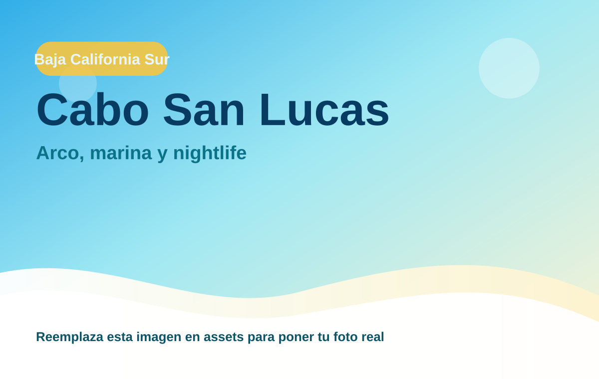
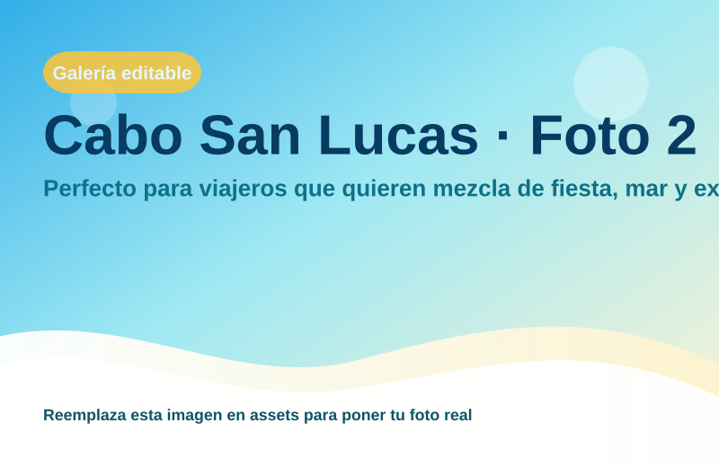

Cabo San Lucas
Perfecto para viajeros que quieren mezcla de fiesta, mar y experiencias premium.

Mar, lujo y vida nocturna
Región: Baja California Sur
Ideal para: Arco, marina y nightlife
Usa esta ficha como base rápida. Puedes imprimirla en PDF desde el navegador o compartir el enlace.
